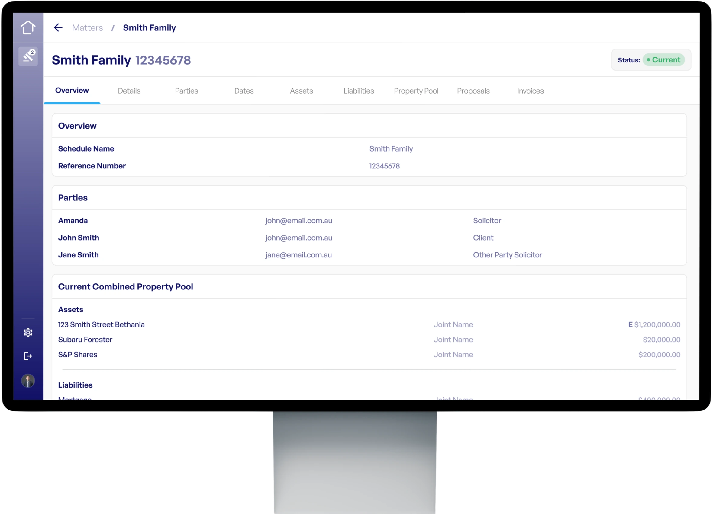

Save time resolving property disputes.
Lex Settle is a universal tool that assists separated parties, solicitors and mediators to resolve property disputes.
- Calculate the pool. Prepare the schedule of assets and liabilities, and determine the property pool available for distribution.
- Share the offer. Send settlement offers through the platform, or download the schedule and offers as a PDF to attach to correspondence.
- Negotiate faster. Both sides collaborate on the property pool, so the contentious issues are easy to identify.
$44.00 (inclusive GST) per matter. No subscription.

assets/hero-net-pool.webp — transparent background, margins trimmed tight to the device, 2×. The lower edge of this frame fades out, so the stand will dissolve rather than end.
Built for separated parties · Solicitors · Mediators
Property settlements are delayed preparing spreadsheets and tables.
Both parties manually update their own versions of the property pool and distributions.
Values, ownership and valuation dates are difficult to record with separate documents.
It is difficult to identify what remains disputed and which items are resolved.
Lex Settle saves you time. Lex Settle creates the schedules on your behalf, which include ownership and valuation dates. You can adjust values and percentages via the platform.
How it works
Three steps, from first schedule to signed-off split.
-
1
Build the pool
Enter every asset and liability, flag each as jointly or individually held, and record a valuation date or estimate. Lex Settle produces a downloadable schedule and the net property pool.
App screenshot Schedule of assets & liabilities Cropped to the entry table with the running net pool visible. -
2
Propose a distribution of the assets and liabilities
Select which assets and liabilities each party proposes to retain. Lex Settle calculates the percentage of the proposed distribution with a “slider”, or you can enter the percentage and Lex Settle calculates the value for you. The values and percentages adjust accordingly.
App screenshot Proposal & split slider Cropped to the slider with both parties' totals in frame. -
3
Share and negotiate
You can generate a PDF of your proposal, or elect to share your proposal with the other party via the platform. Lex Settle has an option for the other party to agree, disagree or comment on each proposed distribution of assets and liabilities. This makes it easy to identify what remains a contentious issue.
App screenshot Other-party response screen Cropped to the agree / disagree / comment controls on line items.
Simplify property settlement matters.
Create schedules
Insert all of the assets and liabilities including the value and ownership. Lex Settle will calculate the sub total of assets, liabilities and the net property pool.
Proposal and split slider
Allocate items to each party by setting the percentage split with the slider, or by inserting a value to calculate the percentage. Both sides of the proposal update together, so adjusting the values and percentages is immediately visible.
Instantly share your proposal
You can automatically share your proposal to the other party for their consideration via the platform. Lex Settle easily identifies the latest version and saves copies of your past offers for your records. Alternatively, generate a PDF version of your proposal which can be downloaded and attached to correspondences or legal documents.
Who it's for
A universal platform.
For separating individuals
Set out what you own and what you owe without a spreadsheet or calculator. Determine the net property pool, put forward an offer, and review the other party's response in one place — whether or not you obtain a solicitor.
- Create the schedule
- The schedule will recalculate as you enter items and percentages
- Download a PDF version to provide to a solicitor or mediator, save it to your own device, or attach it to any legal documents
For solicitors & mediators
Run the property pool for a matter on one shared surface instead of reconciling two schedules by hand. Item-level responses show you exactly where the parties are apart before the conference starts.
- Save time preparing the current property pool schedule and proposed distribution of assets and liabilities, without a spreadsheet or calculator
- Generate a PDF version to attach to without prejudice correspondences or legal documents
- Use Lex Settle during mediations to instantly share an offer. The other party can agree, disagree or comment on each asset and liability, so you can easily identify what remains contentious and what is resolved
- The schedule recalculates automatically as you enter items and percentages, so proposals can be displayed to clients during consultations or mediations
- Lex Settle identifies the latest proposal version and saves copies of your past offers for your records
- Record important dates and valuation dates via the platform
- Price is per matter. Your firm can outlay the cost to your client
Simple pricing. Pay per matter.
Pay a once-off price per matter, irrespective of how long it takes to resolve the matter.
Per matter
$44
Inclusive of GST. No subscription or additional costs.
- Full access to the platform
- Schedule of assets and liabilities
- Net property pool calculation
- Proposals, sharing and item-level responses
- Downloadable PDF schedules
$44 AUD per matter, includes GST.
Lex Settle is a calculation and collaboration tool, not legal advice.
Lex Settle sets out the entered assets and liabilities and percentages. Lex Settle does not provide advice with respect to your entitlements and is not a substitute for legal advice.